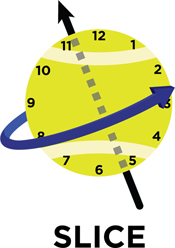
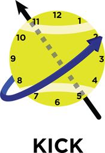
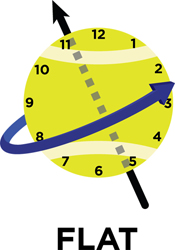

Spin Rates and Axis of Rotation in Elite Serving
How pro servers manipulate spin axis to hit effective slice, kick, and flat serves at the highest level.
Spin Rates and Axis of Rotation inElite Serving
John Yandell, David Whiteside, and Bruce Elliott
What are the real differences in the "types" of spin serves?
Three leading tennis scientists have completed the first ever three dimensional study of ball spin in the elite serve, focusing on the primary spin variations: the so-called "flat," "slice," and "kick" serves. The results are fascinating and help clarify what is actually going on with the ball in high level serving. They also contradict several key beliefs held by many players and coaches.
In fact the study challenges the common terminology used to distinguish serve types. Based on the results, there is no such thing as a purely flat, purely slice, or purely kick serve.
Rather, all high level serves contain a significant level of spin, the extent of which varies with serve type. However, the differences in the axes of rotation across the three serve types are surprisingly small. And this has some important implications for players and coaches.
The study was a collaboration between Japanese researcher Prof. Shinji Sakurai, and two Australian researchers, Dr. Machar Reid, and Prof. Bruce Elliott. (Click Here to read Bruce's articles on the Power Serve.) This article is an effort to translate this important academic work into language any tennis player can understand, written by John Yandell, Bruce Elliott, and Bruce's former student David Whiteside, who also did the awesome diagrams demonstrating the findings.
The study measured speed and spin with precision in elite serving for the first time.
The study featured 7 elite male players, 5 of whom were ATP ranked (including one top 10 player). The players were asked to hit three serve variations: flat, slice, and kick (or topspin), all hit down the T in the deuce court.
Reflective markers were attached to new Slazenger balls and serves were recorded using a 12-camera analysis system that records at 500 frames per second. This allowed the researchers to track the trajectory of the ball with levels of precision that had never been seen in tennis. From this data, they determined the top speed of the ball, how fast it was rotating, and also its axis of rotation, or the angle the ball was spinning as it left the racket.
As you would expect, the so-called "flat" serves had the highest velocities, averaging 116mph. The slice serves averaged 104mph, and the kick serves averaged 91mph. These speed measurements were all within the range of serving speeds seen on the tour, if toward the lower end.

A slice serves spins at an angle just slightly than horizontal, about 8 o'clock to 2 o'clock.
As you would also expect, there was an inverse relationship between speed and the total amount of spin. The flat serves had an average spin rate of about 1200rpm. The slice serves had almost twice this amount of spin at around 2200rpm, while the kick serves had the most, measured at an average of about 3200rpm.
But by far the most revealing aspect of the study was the axis of spin. The study showed that all three variations are hit predominately with sidespin, but also that each serve also had a (relatively smaller) topspin component.
To understand this, imagine yourself as the server watching the ball you have just struck traveling toward the service box on the other side. Now imagine this ball as the face of a clock.
The diagrams show what the spin really looks like. The black arrows indicate the spin axis, while the blue arrows reveal the direction and angle of the spin. Look how close the three variations really are!
The slice serve is the closest to spinning with pure sidespin. Pure spin would be horizontal, with the arrow from 9 o'clock to 3 o'clock. The actual direction of the spin is slightly only steeper than this from about 8 o'clock to 2 o'clock.

A kick serve spins on a angle only slightly steeper than a slice, about 7:30 to 1:30.
As you would expect, the direction of spin is the steepest in the kick serve, but it is still not close to vertical (i.e., top spin) as some players and coaches believe. On the clock face, the direction of spin runs from around 7:30 to 1:30, a long way from pure top spin, and not much steeper than the slice.
The direction of spin in the flat serve is somewhere in between other two, steeper than the slice serve, but not as steep as the kick. But the difference here is so small it's hard to even put an exact clock time on them.
Put another way, the study shows that the total difference in the axis of rotation between the serves is less than 15 degrees. That seems surprising. But the results are actually similar to a study Tennisplayer did several years ago of the serves of Pete Sampras and Greg Rusedski.
That study used only one high speed camera and definitely lacked the scientific precision these researchers achieved. But the results do seem consistent.
Sampras is considered to have the heaviest first serve in history with phenomenal "kick," or a high topspin component. Rusedski is viewed as having one of the great "slice" serves of all time. Yet the study showed relatively small differences in the spin axis as the ball spun off the strings, analogous to the results of the quantitative study summarized here. (Click Here to see that article on Sampras and Rusedski.)

The so called "flat' serve spins on a angle somewhere between slice and kick.
How does all this relate to conventional wisdom in tennis? A common description is that a flat serve is traveling through the air with no spin, that a slice serve is spinning horizontally, and that a kick serve is spinning vertically. Based on the evidence, all these beliefs are inaccurate.
So what does that mean for players and coaches? When developing the serve, coaches often stress the importance of a dual "up and out" hitting action. The "up" hitting action produces top spin (i.e. hitting up, up the back of the ball), while the "out" portion produces side spin, that is brushing the racquet face across the ball. In the context of this study it makes sense that this up and out racket trajectory will produce a combination of both spin types.
Based on these results, it may be possible to suggest differences in the swing path with slightly different combinations of upward and outward action to create the three variations.
Anyone who has faced high level servers knows that despite the relatively small technical variations, there are clears difference in the three deliveries from the returner's perspective in terms of the way they move through the air and how they move they bounce off the court.
This study demonstrates that the incredible precision required to consistently execute the slight differences in what are often considered radically different deliveries. It also provides an exciting new blue print for coaches to evaluate the relative spin components in high level players.
Small swing differences--big effects.
Marking a few balls and filming with an inexpensive consumer high speed camera like the Casios can give coaches an idea of the axis of spin and spin rate that their players are achieving.
But there are still unanswered questions. This study focused on serves down the T in the deuce court. What about the four corners? You would expect a wide slice in the deuce and a heavy kick in the ad might show greater differences, and what about specific differences between first and second serves?
Hopefully this is not the last research on the subject. Who knows maybe we can partner and try some of the same or similar protocols with players in actual pro play. There is still a huge amount we don't know about this game we love.
It's great to work with and present work from the accomplished scientists who are exploring it.

John Yandell is widely acknowledged as one of the leading videographers and students of the modern game of professional tennis. His high speed filming for Advanced Tennis and Tennisplayer have provided new visual resources that have changed the way the game is studied and understood by both players and coaches. He has done personal video analysis for hundreds of high level competitive players, including Justine Henin-Hardenne, Taylor Dent and John McEnroe, among others.
In addition to his role as Editor of Tennisplayer he is the author of the critically acclaimed book Visual Tennis. The John Yandell Tennis School is located in San Francisco, California.
Bruce Elliott is a leading figure in the history of quantitative biomechanical research. He has published over 130 articles, including many of the earliest and most important quantitative studies in tennis. He was a major contributor to World-Class Tennis Technique and the ITF book Biomechanics of Advanced Tennis. As a player and coach, his focus is on integrating research into coaching and teaching. A professor in biomechanics at the University of Western Australia , he is a keynote speaker at major teaching conferences throughout the world.
Dr. David Whiteside is currently a research fellow in The University of Michigan's School of Kinesiology. He has published multiple journal articles on biomechanics and skill acquisition in tennis, with a particular focus on the serve. He received a PhD from the University of Western Australia for his research on the biomechanical development of the female serve. He has worked closely with Tennis Australia's Athlete Development Program and provided performance evaluations for some of Australia's top junior and tour players, including 2011 US Open Champion Sam Stosur.
Source: tennisplayer.net archive — Spin Rates and Axis of Rotation in elite serving.docx (John Yandell teaching library, 2002-2022). Extracted and rendered as HTML for Tennis Future Lab.